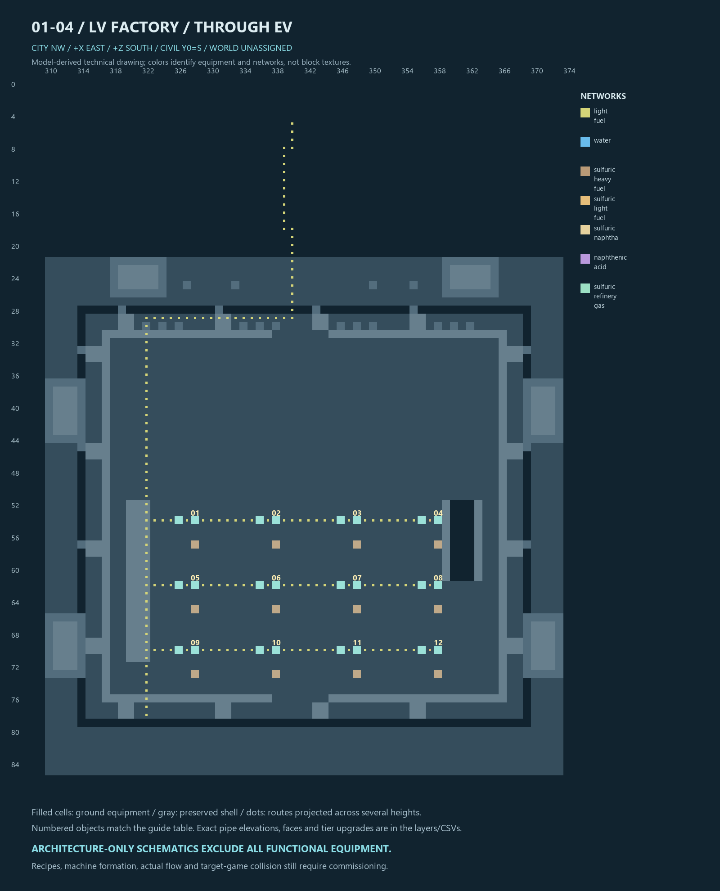

CITY CONSTRUCTION / GTNH 2.9.2 / STEAM → EV
A working city,
one tier at a time.
Keep the planted, refined Valier architecture. Fit the workshops, water supply, light-fuel network and staged production rooms through EV.
25Department layouts
4Electrical stages
27Architecture-only schematics
18,310Engineering positions
Build it yourself. The schematics contain only building fabric and architectural details. Machines, tanks, coils, pipes, cables and conduits are excluded. Use Schematica’s ghost overlay with Printer OFF and place your own blocks. Equipment is supplied separately as drawings and exact placement lists.
Northwest city-local origin · +X east · +Z south · civil Y0 = future surveyed surface S. World anchor/S/rotation remain unassigned. Static checks passed; actual recipes, formation, flow and game commissioning remain open.
01 / THE DEPARTMENT REGISTER
Retain the early workshops. Add the next tier.
Cumulative snapshots: later tiers retain earlier departments. Only the EBF’s listed coil/power items are replaced. IV and later plots retain their original reservations.

Technical drawing from the coordinate model. Filled colors show equipment; dots project routes across multiple heights. Use exact layers for pipe elevations. These diagrams do not represent block textures.
02 / BUILD BY COORDINATE
Inspect each block and connection.
Wheel or pinch the overview drawings; drag the layer grid to pan, wheel to zoom, click to inspect. Gray is preserved shell context. Red crosses are exact source removals. Blank cells are not excavation instructions. GT item damage is separate from placed block metadata.
04 / BUILD AND COMMISSION
Water first. Fuel before electrical load.
LV / infrastructure & retained tools
Build civil access, shells and the dedicated Water Works source. Commission Steam Works with one boiler. Fit LV parts, ore, chemistry and circuit workshops. Import starter fuel. This is an HV-era migration plan; the original two-LV-hatch EBF bootstrap is outside this pack.
MV / fabrication & hot processing
Install MV fabrication, polymer/material batches, fuel buffers and the explicitly modeled MV EBF. Keep hot outputs and recipe-specific gas cells separate. Gather each workcell’s installed items as you need it.
HV → EV / fuel, cleanroom & conversion
Start the oil-to-light-fuel train, then HV fabrication/chemistry, freezer and cleanroom. Add EV conversion pods and the EV chemistry/processing benches. Prioritize one EV batch within the operating budget.
Detailed written sequence and recipe settings · Blank measured-results log · Installed evidence · Independent geometry/access checks
05 / KEEP THE TWO PACKS DISTINCT
Ghost shells. Manual equipment.